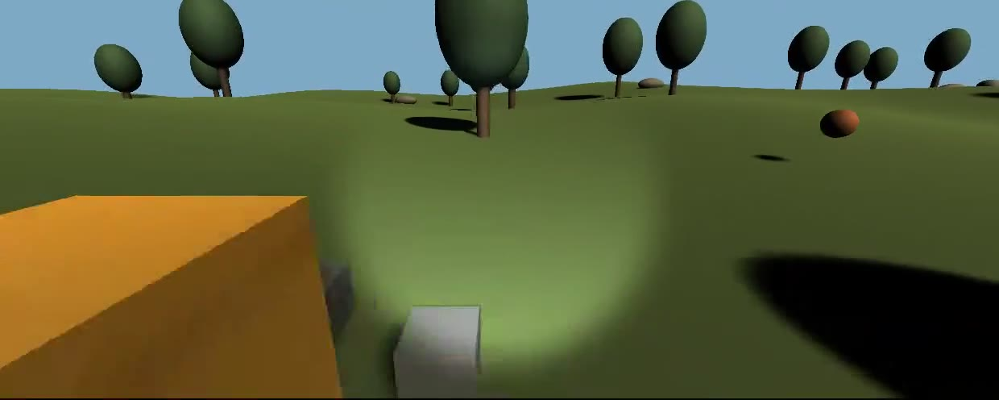

Experience
Explore a forest while watching four connected survival values: health, thirst, hunger, and stamina.

Description
The character’s status is part of the play space. The player must read changes in those values while moving through the environment, so traversal and survival feedback are considered together.
The project’s documented core is the survival-status system and the forest setting. The overview does not add a crafting tree, a story campaign, or other survival features that are not established in the source.
Detailed features
Forest navigation
The environment provides the playable or visual setting. Landforms, landmarks, and surface detail give the space structure and make routes through it recognizable.
Survival status interface
A visible status value communicates the character’s condition. Changes in that value give actions consequences and make survival or recovery part of the play loop.
Health and resource management
A visible status value communicates the character’s condition. Changes in that value give actions consequences and make survival or recovery part of the play loop.
Build summary
The project is presented with Unity. Its implementation connects the input or controls, the project’s changing state, and the rendered interface. The Source action opens the saved code or build material for this entry.
- Technology
- Unity
- Scope
- Unity project
- Feature focus
- Forest navigation
Feature video
Project recording · 1240 × 496 · Original resolution